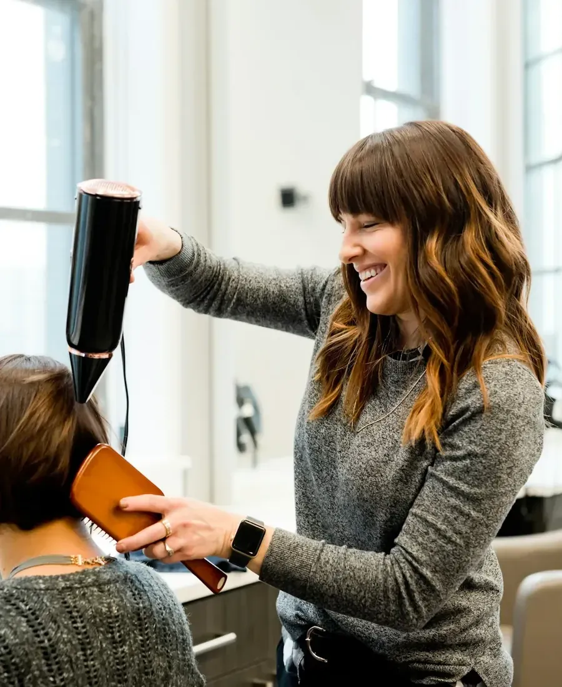
Knippen en brushen
Wassen, snit en brushing, met of zonder verzorging. Ook gewoon een snit zonder wassen kan.
vanaf€ 18Prijzen
Bij Déathos aan de Revinzestraat knippen, kleuren en brushen Daisy en haar dochter Élie voor dames, heren en kinderen. Op donderdag tot 22 uur, en je weet vooraf wat je betaalt.
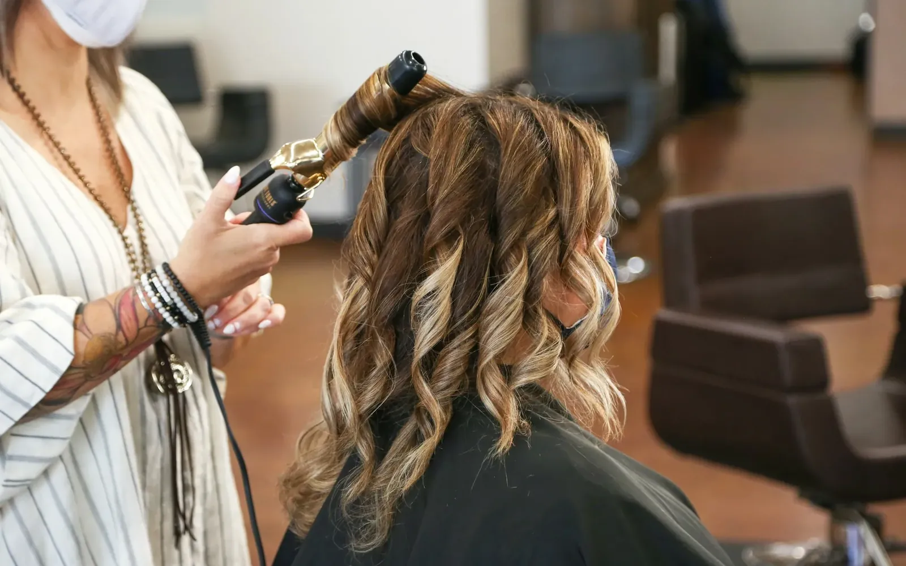
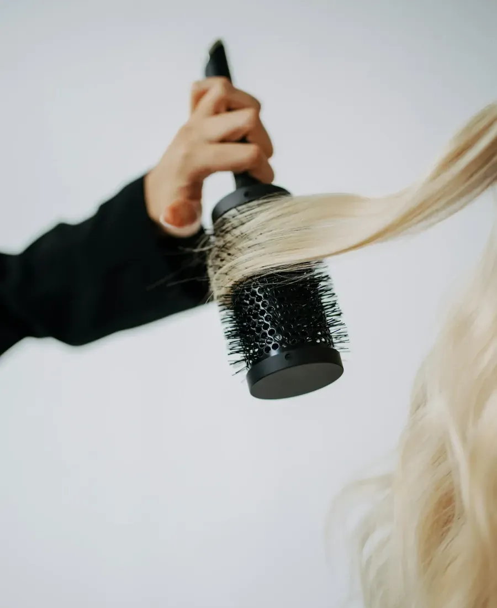
Kies wat je nodig hebt. Bij elke dienst zie je meteen de prijs, zoals in het salon.

Wassen, snit en brushing, met of zonder verzorging. Ook gewoon een snit zonder wassen kan.
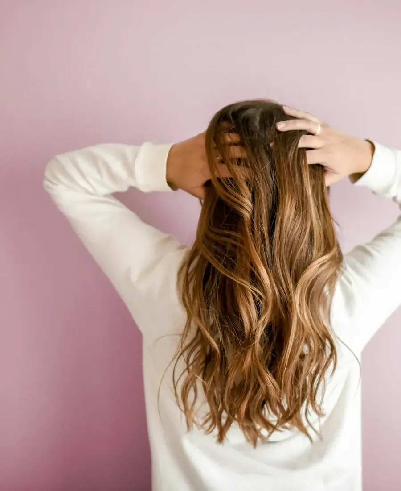
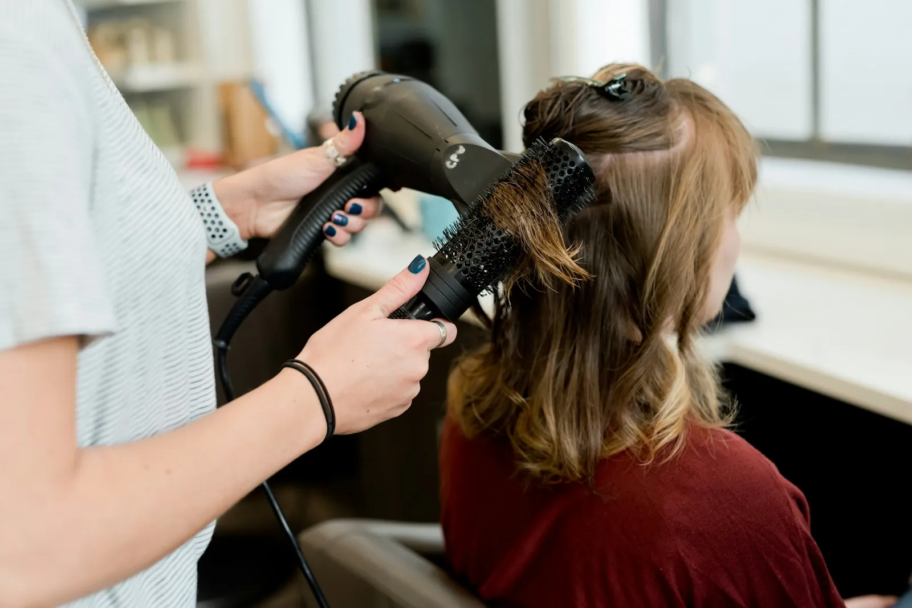
Zachte overgangen in één of twee kleuren, eventueel met toner, snit en brushing.
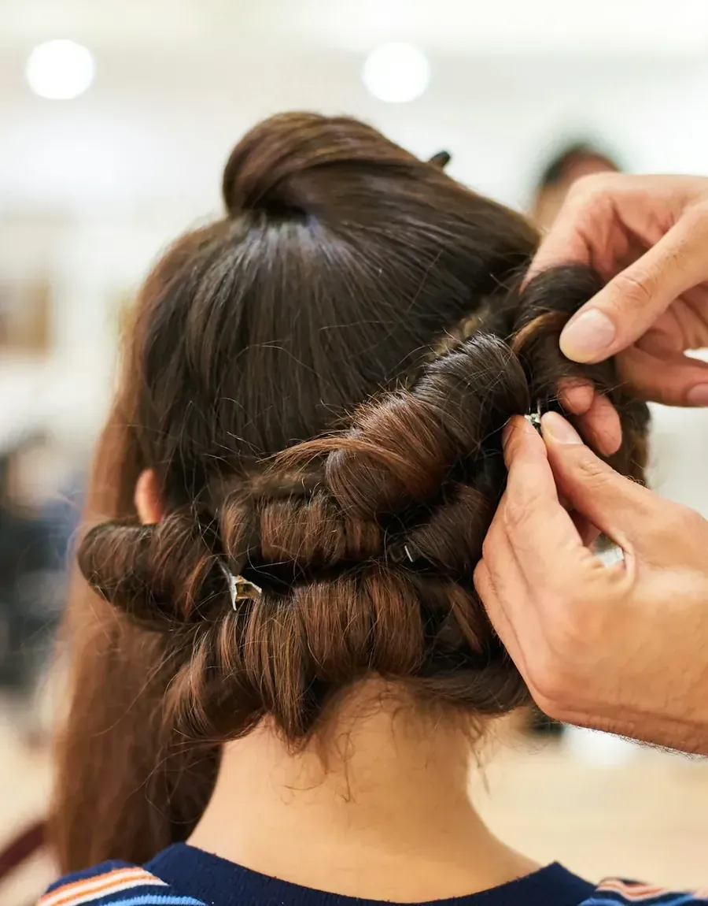
Voor wie volume en krul wil die blijft. Met watergolf, permanent of allebei.
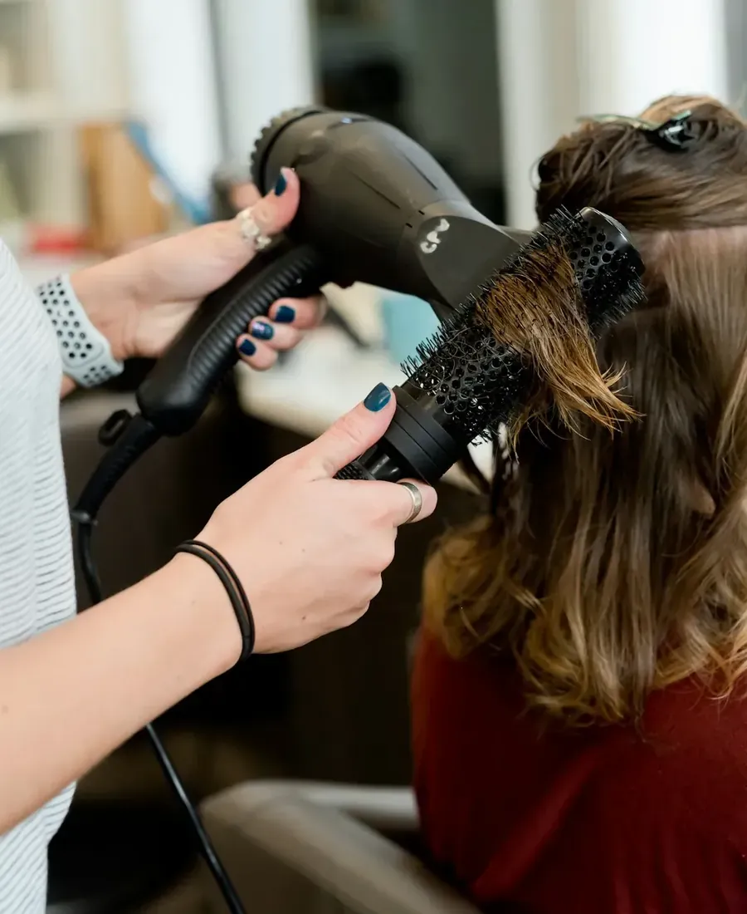
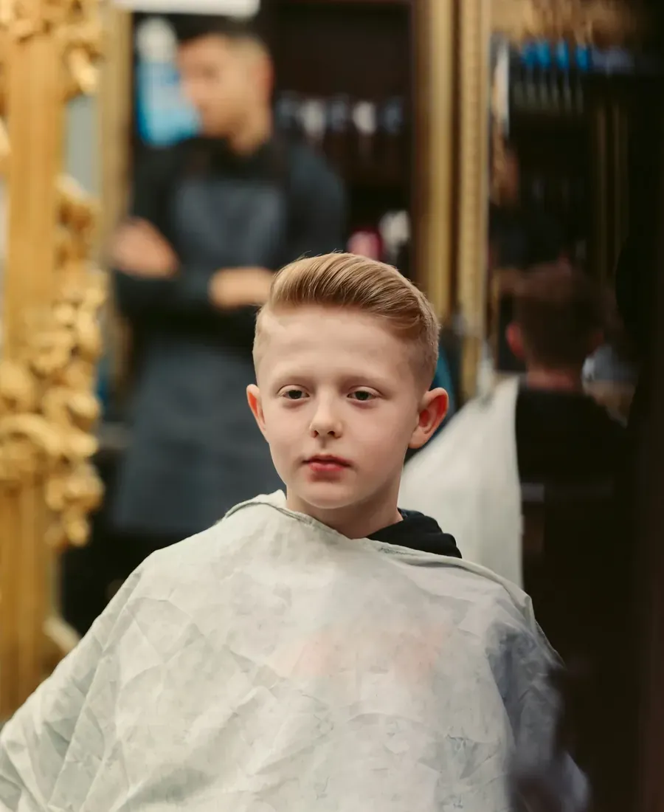
Kinderen tot 12 jaar knippen we aan een eigen tarief. Ook een opsteekkapsel voor een feest.
Met de duur erbij, zodat je weet hoe lang je in de stoel zit. Een greep uit de volledige lijst.
Twijfel je tussen twee behandelingen? Bel even, dan denkt Daisy met je mee.
Bel 050 22 09 25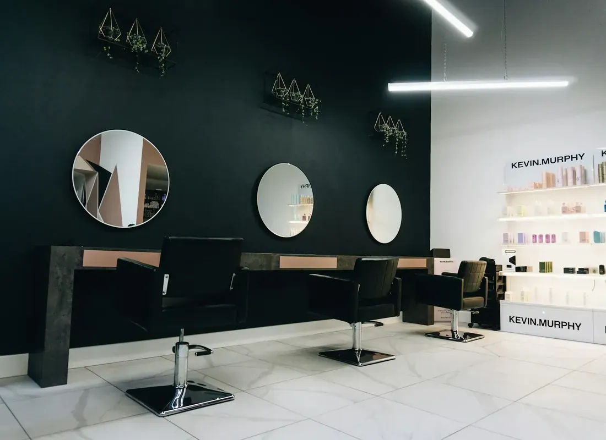
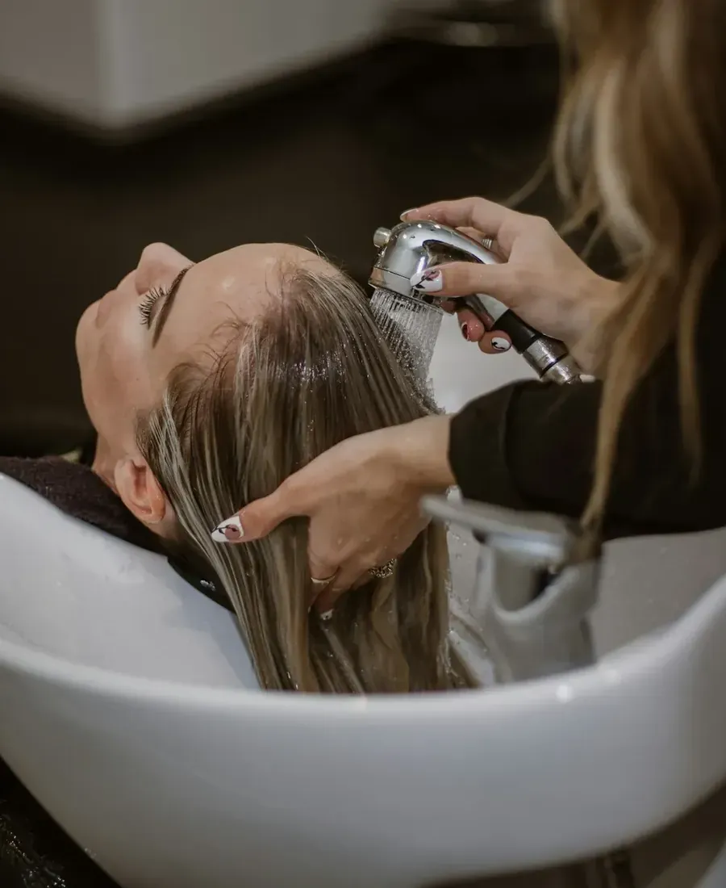
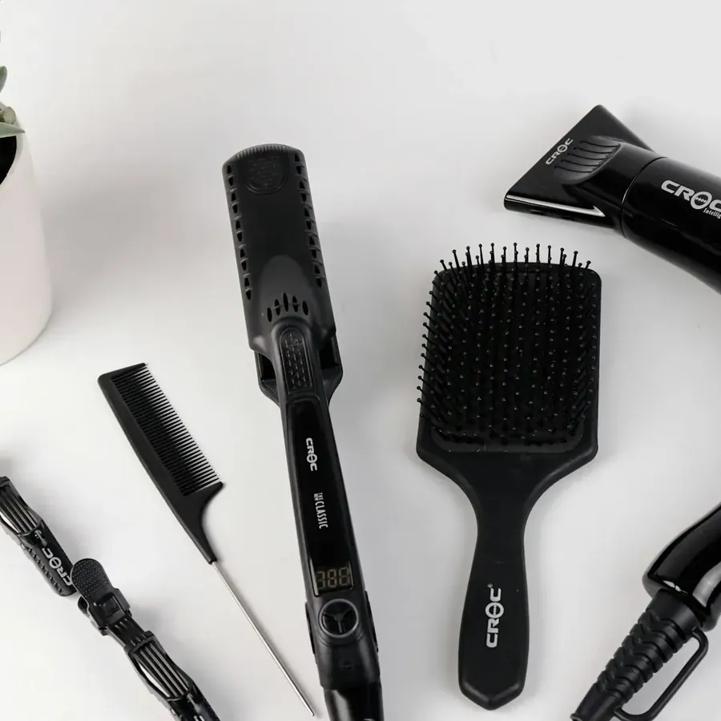
Bij Déathos sta je bij Daisy of bij haar dochter Élie in de stoel. Een zaak waar je met plezier naartoe gaat, waar de koffie klaarstaat en waar je even op adem komt.
Wat klanten het vaakst noemen: vriendelijke mensen, correcte prijzen die je vooraf al kent, en openingsuren die passen bij een volle week.
“Daar ga ik met plezier naar de vriendelijke kapster Daisy, ook haar dochter Élie doet dat heel goed.”
Ingrid Willaert, op Google
Een klant schreef het al: hele lange openingsuren, chapeau. Zo vind je altijd een moment dat past.
“Vriendelijke mensen, altijd met een glimlach naar buiten en correcte prijzen. Handig dat je op de website al kan zien hoeveel iets zal kosten.”
“Vriendelijk, correcte en duidelijke prijzen. Kennen duidelijk hun stiel. Hele lange openingsuren. Chapeau.”
“Het doet me zo goed om daar even te vertoeven, met een toffe babbel en een kopje koffie erbij. Als ik daar buitenga, voel ik me precies een ander mens.”
Via de online agenda zie je welke uren nog vrij zijn en boek je in een paar klikken.
Naar de online agendadebacker.daisy@gmail.com
Ja. In de online agenda zie je meteen welke uren vrij zijn. Bellen of het formulier invullen kan natuurlijk ook.
Ja. Elke behandeling heeft een vaste prijs en een duur. Je vindt ze hierboven en in de online agenda.
Op donderdag zijn we open tot 22 uur. Op zaterdag kan je al vanaf 8 uur komen.
Ja, kinderen tot 12 jaar knippen we aan een eigen tarief, vanaf € 14.
Zeker. Watergolf, permanent en opsteekkapsels horen er gewoon bij.
Ik maakte deze demo voor jullie om te tonen wat er kan. Na een kort gesprek maak ik er iets veel persoonlijkers van, helemaal naar jullie wens.
Vrijblijvend. Ik kom langs of we bellen.
Op maat, op jullie eigen domein.
Geen voorschot. Jullie betalen pas als alles klaar is.
Hosting, domeinnaam en kleine wijzigingen, zoals nieuwe openingsuren.
Omdat een voorbeeld meer zegt dan een mail. Zo zien jullie meteen wat er kan, en het kost jullie niets.
Nee. Het gesprek is vrijblijvend. Vinden jullie het niks, dan is het daarmee gedaan.
Na ons gesprek staat jullie site binnen 10 tot 14 dagen online.
Zeker. Jullie domeinnaam kan gewoon blijven, de nieuwe site komt in de plaats van de oude.
Nee, dat doe ik op basis van ons gesprek. Eigen foto's zijn mooi meegenomen, maar niet nodig om te starten.